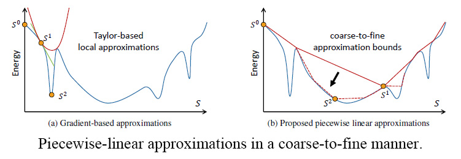
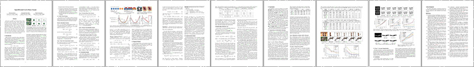
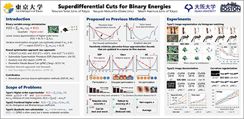
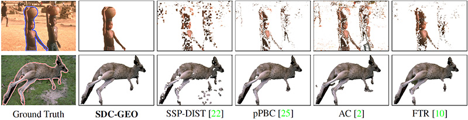
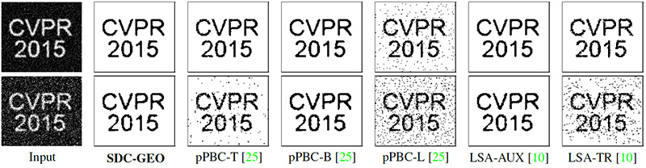
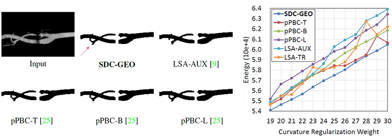

hide forever |
hide once
hide forever |
hide once
Superdifferential Cuts for Binary EnergiesTatsunori Taniai1 Yasuyuki
Matsushita2 Takeshi Naemura1
1The University of Tokyo, Japan 2Osaka University, Japan CVPR 2015 |
||
 |
||
|
Abstract |
|
| Code is now availabe at GitHub. See also Meng et al. "Pseudo-Bound Optimization for Binary Energies" (ECCV 2014) for data and code. |
||
|  | ||
|  | ||
Supplementary Video
Please enable javascript
|
||
Generalization to prior methods
Segmentation results via color histogram matching (Higher-order energies) Deconvolution results (Nonsubmodular pairwise energies) Curvature-regularization results (Nonsubmodular pairwise energies) |
||